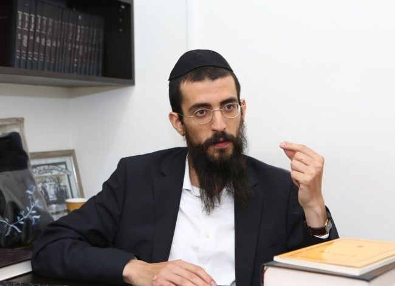

מאה ועשרים עונה חלפו מאז הוקם בית היוצר הגדול של חיילי בית דוד, אשר גייס ורתם רב
מאה ועשרים עונה חלפו מאז הוקם בית היוצר הגדול של חיילי בית דוד, אשר גייס ורתם רבבות חיילי בית דוד אל שורות המעדבה הגדולה בהבנת העולם לגאולה הנכספת.» לרגל התאריך המיוחד ולרגל ימים אלו שבהם פתחו אלפי תמימים שנת לימודים חדשה, יזמן׳ חדש, פנינו להרה״ח הרב שמואל ביטון, מנהל רוחני בישיבת ״תומכי תמימים״ באו
מאה ועשרים עונה חלפו מאז הוקם בית היוצר הגדול של חיילי בית דוד, אשר גייס ורתם רבבות חיילי בית דוד אל שורות המעדבה הגדולה בהבנת העולם לגאולה הנכספת.» לרגל התאריך המיוחד ולרגל ימים אלו שבהם פתחו אלפי תמימים שנת לימודים חדשה, יזמן׳ חדש, פנינו להרה״ח הרב שמואל ביטון, מנהל רוחני בישיבת ״תומכי תמימים״ באור יהודה, לשיחה מעמיקה על תלמידי התמימים של ימינו, על הסיבה שבגינה כדאי לנתק בן צעיר מבית הוריו ולשולחו למקום תורה, ועל היות התמימים ׳מבקשי השם׳ גם בעידן המודרני

מזוודה נגררת אחרי ה’תמים’, עמוסה לעייפה בבגדים מגוהצים, ספרי לימוד מדיפי ריח של ‘חדש’, עוגה ומיני מתיקה שהאם האוהבת טרחה והכינה בלילה שלפני…
הבית נותר מאחור, מעתה כל “רכושו” של התמים הוא מיטה וארון צר, כסא ב’זאל’ ושולחן לא–גדול אותו הוא חולק עם החברותא שלו. העולם של התמים מתחלף לעולם רוחני שהולך ומתעשר מיום ליום ומחודש לחודש. עולם של לימוד התורה בהתמדה ושקידה, של הבנה ויגיעה, של התקשרות לרבי, חסידישקייט ו’מבצעים’.
תחילת שנת הלימודים סמוכה בהשגחה פרטית ליום בו מלאו 120 שנה לייסודה של ישיבת “תומכי תמימים”, כור ההיתוך של רבבות נשמות שזכו להימנות על יושבי ה’זאל’ החב”די לאורך השנים. סיבות אלו מהוות הזדמנות מצוינת לשיחה מרתקת ומחכימה על מהותו ודמותו של ‘תמים’ בשנת תשע”ח עם הרה”ת הרב שמואל שי’ ביטון, מנהל רוחני בישיבה קטנה “תומכי תמימים” באור יהודה.
את השיחה קיימנו ביום שני השבוע, במשרדו הצנוע הנמצא סמוך ונראה ל’זאל’. זו הייתה השעה שבה התלמידים ישבו בכיתות השיעורים והאזינו ברוב קשב לשיעור עיונא בגמרא הנלמדת בשנה זו בכל ישיבות חב”ד בעולם, מסכת “בבא קמא”.
“מנהל רוחני”, כשמו כן הוא - תפקידו לנהל, לפקח ולהשגיח על כל הענינים הרוחניים בישיבה. הוא האיש שהולך יד ביד עם הצוות הרוחני ועוקב מקרוב אחר התקדמותו הרוחנית של כל תלמיד בפרט, והמצב הרוחני הכללי בישיבה. ביחד עם המשגיחים, המשפיעים, הרמ”ים והמדריכים, הוא מנווט את הישיבה אל היעדים הדרושים לה.
השתדלתי להיות ‘פה’ עבור מאות ואלפי הורים שלא תמיד ברור להם איך וכיצד, למה ומתי בכל הנעשה בין כתלי הישיבה. ביקשתי להציג את שאלותיהם, לברר עבורם את מסכת ההשקפה של הצוות העומד על גבם של ילדיהם, ולהבין בעבורם את השאיפות והדרישות הנדרשות מכל תלמיד על ידי הנהלת הישיבה של “תומכי תמימים”.
השאלה הראשונה שביקשתי לברר עם הרב ביטון: איך באמת מנתקים בחור ממקום גידולו והווייתו, שם מכירים אותו היטב ושולחים אותו למקום זר וחדש, תחת השגחה ופיקוח של אנשים שלא מספיק מכירים אותו, ומציגים בפניו דרישות רבות לגבי כל פרט ופרט באורח חייו?
זו אכן שאלה מתבקשת אותה אני מציג בעצמי בפני ההורים בתחילת שנת הלימודים החדשה. אני חושב שחיוני לחדד ולרענן קודם כל לנו, הוריו ומחנכיו של התלמיד, מהו ה’מבוקש’ אותו אנו חפצים להשיג בכניסה ל”תומכי תמימים”.
אני מאמין שהורים ותלמידים כאחד אינם בוחרים לעלות לישיבה אך ורק משום שזהו חלק מהסדר הרגיל; רק כי זו הרוטינה הכללית וזה מה שקורה באופן טבעי אחרי גן הילדים ושמונה שנות הלימוד בחדר.
ההורים בוחרים לשלוח את בנם לישיבה, בעיקר מפני שהם חשים שזה מה שנכון להם לעשות כהורים למען חינוך ילדיהם והתלמידים למען חינוך עצמם.
ומהו באמת ה’מבוקש’ שעבורו שווה המעבר והקשיים הכרוכים בו מן הבית ל”תומכי תמימים”?
להפוך להיות עובד ה’ בלבב שלם. לא לחצאין ולא לרביע.
ישנו מושג שנקרא ‘אריינקוקן’ - להציץ. כלומר, כל זה שאני נכנס פנימה - “אריין”, הוא מלכתחילה אך ורק בכדי להציץ.
ישיבה בכלל, ו’תומכי תמימים’ בפרט, מבקשת להפוך את התלמיד ממצב של “מציץ מן החרכים” לכזה שמוקד החיים שלו והחוויה האישית המלאה שלו יונקת ומסתובבת סביב ציר אחד בלבד - דביקות באלקים חיים.
החסיד הנודע ר’ אברהם פאריז ע”ה נולד וגדל בעיר באברויסק. בגיל צעיר נסע יחד עם חברו הטוב הת’ אריה לייב שיינין ע”ה ללמוד בליובאוויטש ובאותן השנים היו חוזרים לבקר בבית רק לקראת החגים.
יום אחד, כאשר חזרו מהישיבה לבאברויסק, עצר אחד מגבאי בתי הכנסת את ר’ אברהם וביקשו להיכנס להשלים מניין לתפילת מנחה. הוא הסכים. כשנכנס פנימה גילה שיש שם עשרה מתפללים בלעדיו. ‘אם כן, מדוע ביקשת ממני להיכנס?’ תמה באוזני הגבאי. השיב לו הגבאי ‘אה, הבחור ההוא שיושב בצד - בהצביעו על אריה לייב שיינין - דעתו השתבשה עליו ואינו ראוי שיצרפו אותו למניין’. ר’ אברהם נבהל לשמע הדברים על חברו הטוב, והגבאי נימק: ‘הלוא הוא יושב כאן משעות הבוקר עטור תפילין ומתפלל מבלי להבחין במתרחש סביבו. אמור לי אתה - האין זה משוגע?!’
לימים סיפר ר’ אברהם: באותו רגע חשתי צביטה בלב. הבנתי שטרם זכיתי להפוך ל’תמים’ אליבא דאמת וכנראה שטרם הפנמתי כחברי לייבע לאן ‘תומכי תמימים’ רוצה להוביל אותי…
האקווריום של התמימים
כיצד מתרחש הלכה למעשה השינוי המשמעותי שאתה מצביע עליו?
ראשית כל, הדבר שבפועל מעסיק את הבחור מבוקר עד ערב והרבי מה”מ הגדירו פעמים אינספור כ”עיקר עניינו של תמים” - הלוא הוא לימוד התורה הק’, נגלה וחסידות.
אם הייעוד האישי של כל תמים הוא להיות עובד ה’ בלי מרכאות, אזי הכתובת הראשית היא הדביקות בחכמתו ורצונו שלו יתברך שזוהי התורה.
אבל כאן ההבדל בין ‘לפני’ ל’אחרי’. אמנם גם בחדר למד הילד משנה, גמרא וחסידות, אך היה זה בבחינת הצצה בלבד של לימוד ‘לפרקים’. וזאת מפני שהלימוד רצוף בהסחות דעת שמנתקות אותו מהלימוד ומחברות אותו לעוד הוויות ועיסוקים חשובים שתופסים אצלו מקום נכבד בעולמו.
עם בואו לישיבה, הוא מתנתק למעשה מהבית ונכנס לאקווריום של לימוד תורה. הוא מוקף בתורה לאורך כל סדר יומו, ואת זה הוא חי ונושם. זו המשמעות של “להמית עצמו באוהלה של תורה”; הישיבה היא אוהלה של תורה, ים שבו הדגים - תלמידי התמימים - אינם פוסקים מלשוט בו כשפיהם הפתוח בולע עוד ועוד מהתורה שלא רק מכונה בשם המושאל, אלא מהווה בפועל חיינו ואורך ימינו.
דווקא בתקופתנו יש לנו יכולת להבין באמת כמה גדול כוחו של היסח הדעת ולו הקטן ביותר בכדי ‘לשלוף’ אותנו החוצה לגמרי מאיפה שהחלטנו ובחרנו להיות מרוכזים.
אם–כן, בזמנינו גדל שבעתיים ערכו של הלימוד בתוך האי הישיבתי. ומובטח כי תלמיד שלא רק ‘יציץ’ אלא יצלול פנימה, תהפוך התורה להיות הבסיס ועיקר חייו, גם בשנים שבהן יהיו ריחיים על צווארו.
איך אנו כהורים יכולים לשדר את ההבנה הזאת לבננו הצועד בשערי הלימוד הישיבתי?
קודם כל, בכך שההורים עצמם יחדדו זאת לעצמם ויתחברו לזה. לא פעם הורים רואים את סדרי הלימוד בישיבה המתחילים בשעות הבוקר המוקדמות ומסתיימים בשעות הערב, והם נלחצים. ‘איך הילד שלי הולך ‘לשרוד’ את כל זה?’, ללמוד עוד שעה ועוד שעה, ובצהריים מתחילים סדרי יום נוספים שמהווים ‘יום’ בפני עצמו. אך חשוב לזכור ש”לא בשמים היא”, וכי בנכם מסתכל על זה אחרת: לא כ’עוד שעה’ של לימוד, מטלה בלתי פוסקת, אלא כאוויר חיים לנשימה שזהו דבר טבעי המלווה בעונג ומתיקות רבה.
לאחר הריענון לעצמנו, נוכל לשדר לבן כשהוא נכנס ללמוד בישיבה, שכל קשיי ההסתגלות והריחוק מתגמדים לעומת הריווח האמיתי הטמון כאן. רצוי מאוד להמשיך בזה לאורך כל שנות לימודיו בישיבה. אם בכל פעם שנתעניין בשלומו, נוסיף להתעניין בלימוד שתופס את רובו ככולו של יומו ואף ללמוד עמו כשחוזר לשבת ביקור - הרי שזה יהפוך למטבע המהלכת שלו.
קורה הרבה פעמים שהורים מתקשרים לאחר כמה חודשים שבנם בישיבה ומספרים בלהט שהם חשים באופן ניכר כי הוא ‘נקלט’ בתוך ההוויה הישיבתית וזה כמובן משמח מאוד.
על כל איש צוות בישיבה להזכיר לעצמו כל יום: אני עובד אצל הרבי
הגדרת קודם את הייעוד של “תומכי תמימים” במילים חדות: להפוך לעובד ה’. מה מוליך את התלמיד שגם ב’תומכי תמימים’ עיסוקו המירבי הוא בלימוד אל היעד הזה?
הייתי מציע שנאזין ל’סטייטמנט’ של מייסד הישיבה הלוא הוא כ”ק אדמו”ר הרש”ב נ”ע, ב”קונטרס עץ חיים” אות כב: “יסוד אגודתנו אינו להגדיל או להרחיב עסק התורה הנגלית, כי אם זאת היא תכלית יסוד אגודתנו, אשר הבחורים העוסקים בתורה הנגלית יהיו יהודים (אידען), יראים ושלמים עם ה’ ותורתו . . לנטוע בהם איזה הרגש פנימי ביראת ה’ ואהבת ה’”.
על פניו, ניתן היה לכאורה לומר שלימוד החסידות בלבד שהוא בבחינת “דע את אלקי אביך”, הוא זה שמוודא שלימוד הנגלה וכל שאר ענייניו של התלמיד יצעידו אותו ל”עבדהו בלב שלם”, להיות ירא ה’, אוהב ה’ ושלם עם ה’.
אך מסתבר שזהו אכן חלק נכבד מן הדרך כפי שהוא ממשיך שם באות כב, אך אין זה מספיק. וכי למה? מפני שהמסר שבדברי הרבי נ”ע הוא מעבר לכך: כשהקימו למשל את ישיבת וולוז’ין וסניפיה, ראשי הישיבה בוודאי שאפו שהתלמידים יהיו יראי ואוהבי ה’, ובכל זאת כותב הרבי נ”ע “ראֹה ראינו אשר הרבה מהצעירים הלומדים תורה אין בהם יראת שמים”, וזאת מפני שכאשר תחמו את לימוד התורה לתוך מסגרת ישיבתית והפכו אותו לערך מרכזי שטוּפח בפני עצמו, הרי שהוא איבד מהקשרו כאמצעי לדביקות בהשי”ת.
ולכן לא ייפלא, שבכמה משיחותיו הק’, מדבר כ”ק אדמו”ר הריי”צ נ”ע, ‘המנהל פועל’ של הישיבה, על האפשרות שגם לימוד החסידות יכול להפוך להשכלה עיונית בפני עצמה שאינה הופכת בהכרח את הלומד לעובד ה’.
וכאן נכנסת עבודת התפלה אשר היא השער האמיתי דרכו עולים כל הקרונות אל היעד מפני שהיא מעמידה את התמים מול הקב”ה ממש, כעבד לפני אדונו, ופותחת את הכלי קיבול שבתוכו ישכון אור ה’ בליבו פנימה ובשלושת הלבושים מחשבה, דיבור ומעשה.
לא לחינם, הרבה פעמים איחל הרבי מה”מ לתלמידי התמימים, בניו, בעת “ברכת התמימים”, שיצליחו בלימוד התורה בהתמדה ושקידה ובעבודת התפלה “בפרט”.
האם לדעתך החזון והייעוד המקורי של רבותינו נשיאנו מייסדי הישיבה, מלווה גם היום, בעידן שלנו, את הצוותים הרוחניים בישיבות תות”ל, או שהאתגרים הפכו להיות שונים?
אינני מתיימר להעיד על אחרים, אך יכולני לומר בוודאות שזהו אתגר אמיתי. אין זה סוד שקצב האתגרים בעולם החינוך גדל ומתרבה מיום ליום, הן בכמות והן באיכות, ומשום כך הרבה מהאנרגיות מושקעות פעמים רבות בחשיבה ובמתן מענה לפיתויי הזמן ואתגרי השעה.
ב”ה שהמציאות היא שהישיבות לא מנסות לכסות את העיניים, אלא ערניות למה שבחורים מתמודדים כיום. כל ישיבה משקיעה בדרך המקורית לה בהבאת מענה אמיתי שיעניק חוסן נפשי איתן לתלמידים, וזה ראוי להערכה מרובה.
דווקא משום כך, עלול לפעמים להיווצר רושם בתוכנו פנימה, שיש לנו בשורות חדשות להציע; הגדרות חדשות ל’מי אנחנו’.
ואשר על כן אני רואה זאת כאתגר ממשי להזכיר לעצמי מידי יום ביומו בבואי לישיבה: אני עובד אצל הרבי, הנשיא בהווה של תו”ת, שהוא הממשיך בפועל של רבותינו נשיאנו המייסדים של תו”ת ואני משרת את הייעוד שהם שירטטו ועליו התפללו כעשר שנים באוהלי אבותינו הק’.
חשוב שנזכור שלא באנו לתפקיד רק בכדי להגיב ולהציע פתרונות למצבים שונים, אלא בכדי להוביל מתוך יוזמה מלחמת תנופה, באופן של “ונפלינו”, להוליך את תלמידי התמימים בדיוק אל היעד שכוון לפני 120 שנה בט”ו אלול ה’תרנ”ז.
כשאתה אומר “להוביל מתוך יוזמה” - למה כוונתך?
כפי שאמרתי קודם, ישיבות תו”ת משתדלות במיטב כוחן להעניק מענה לאתגרי התלמידים כיום. אחד מן הדברים הבולטים הוא היחס האישי שהפך בימינו למטבע לשון השגורה בפי כל. אין ישיבה שמכבדת את עצמה, שלא מתהדרת ב”יחס אישי לכל תלמיד”.
גם בישיבות הכי ממוסדות, מקדמת דנא, הבינו זאת. הצוות כולו הפך ליותר קרוב, אישי, מתעניין בשלום כל תלמיד, “ומקבל את כולם בסבר פנים יפות”.
זו אכן התשתית שממנה ניתן יהיה לקדם בחור בעבודת ה’, אך זוהי רק התשתית בלבד. גם אם כמשפיע אני יוזם את ה”בוקר טוב” הלבבי ביותר, טרם התחלתי להיות היוזם בחלק המשמעותי של מלאכתי שהוא: הדרכה אישית פרטנית בעבודת ה’, החל מאיך להתבונן בדא”ח, כיצד להתחיל את השלבים הראשונים בעבודת התפלה, זיכוך הנפש הבהמית הפרטית שלי וכו’.
דווקא לאור האתגרים הרבים, אל לנו להשלות את עצמנו שמכיוון שבחור גילה בפנינו את מצפוני ליבו, אזי מלאכתנו הגיעה לשיאה. מלאכת ההכלה היא חשובה ואפילו קדושה, אך היא רק תחילת הדרך. זה שהבחור הרגיש מספיק בטוח כדי לפתוח בפנינו את סגור ליבו זוהי הקרקע הפוריה עליה נתחיל את המלאכה, מבלי לחכות לו שיתעורר בשיעור ג’ לשאול כיצד מתפללים וכדומה.
תפקידנו ליזום את הדרכתו הפרטנית של הבחור בהצבת יעדים רוחניים בפניו כבר מהרגע הראשון שלו בתו”ת. האימון הזה שאנחנו משדרים לו בעצם הצבת היעדים, הופכת אותו לשמח ומאושר מאין כמותו.
רק כך הצליחו בתו”ת מקדמת דנא, להעמיד תלמידים יראים ושלימים כי כך אכן השתרש על ידי הרבי הריי”צ נ”ע מרגע ההקמה, כפי שמתאר בעצמו בכתי”ק בהקדמה לקונטרס התפלה: “בלימוד דא”ח בכלל ובהנוגע להדרכה הפנימית בעבודה שבלב זו תפלה ופעולתה בארחי מדות טובות על פי לימוד תורת החסידות בפרט, נמסרה ע”י שניים מזקני אנ”ש…”.
כצוות הרוחני, עלינו ליצור בזאל מצב בו תלמיד יחוש כי “ה’ משמים השקיף על בני אדם, לראות היש משכיל דורש את אלוקים”.
החידוש בצעירים דווקא
אתה הרי עובד בישיבה קטנה עם תלמידים צעירים הן בגיל והן בבשלות נפשית, כיצד אתה רואה אותם מממשים את הייעוד הזה מציאותית?
תראה, ‘חדרים’ עם דרגות זו למעלה מזו של יצירת עובדי ה’, את זה התחיל כבר רבינו הזקן נ”ע. כל החידוש של הרבי הרש”ב נ”ע היה דווקא בכך שזה אפשרי ובמידה מסוימת אף יותר שרשי ובר קיימא בצעירים דווקא.
בכ”ף מרחשוון ה’תנש”א ביקש הרבי להדפיס מחדש את קונטרס “עץ חיים” ואף חילק אותו לקהל כולו. שלושה ימים לאחר מכן, הרבי דיבר על כך שהקונטרס הודפס מחדש וחולק בכדי להבהיר, כי מטרת העל ש”בייסוד אגודתנו” שקבע הרבי נ”ע, לא רק שהיא שייכת ורלוונטית לימינו, אלא שזה שייך עתה ביתר שאת וביתר עוז. המעניין הוא שהרבי מה”מ מדייק מזה שהרבי נ”ע משתמש בצמד המילים “הרבה מהצעירים”, כדי ללמדנו שהכוונה ב”אגודתנו” הוא לצעירים דווקא.
אך כל זה הוא כפי שזה בעיניים של הרבי והשאלה היא האם גם אנחנו רוכשים את “דעם רבי’נס א קוק” כשאנו ניגשים אל תלמידינו אנו.
למה אתה מתכוון?
אני מתכוון ששום דבר מכל הייעוד הנכסף הלזה אינו יכול לבוא לידי מימוש כל עוד ואיננו משרישים בתוכנו הנחת יסוד הסתכלותית ראויה על תלמידינו.
הרבה פעמים יוצא לי לחשוב על הפתיח שכותב רבינו הזקן נ”ע להקדמת המלקט “אליכם אישים אקרא שמעו אלי רודפי צדק מבקשי ה’”.
הרבי פונה כאן לכל אחד ואחת עד ביאת המשיח ואומר לו: זה שאני מרשה לעצמי לפנות אליך בספר שלם בו נעסוק בדרישה הבלתי מתפשרת לעסוק ב”אתכפיא” במחשבה דיבור ומעשה ובדרישה לעמול קשה על–מנת לרסן את הנפש הבהמית ולעורר בך אהבה ויראה להשי”ת - זהו אך ורק משום שיש לי הנחת יסוד קדומה עליך שאתה מבקש ה’ בהווה!
ברור הרי שאת ה’מבקש’ הזה צריכים לגלותו בהבעת רצון ממשי, בבחינת “בשווקים וברחובות אבקשה את שאהבה נפשי”, אך הוא כאן. קיים. ולא רק קיים אלא שיש בנו נפש אלוקית שכל חפצה, רצונה ומגמתה הוא לידבק בשרשה באלקים חיים בכל הלבושים כולם עד להיות מרכבה אליו יתברך!
כאשר אנו מתוועדים שעות ארוכות על תחבולות הנפש הבהמית וכיצד ‘לטפל’ בה, שואל הבחור בסתר ליבו “וכי איך בדיוק הוא רוצה שאתנתק מעולם הזה ותאוותיו שהם חלק ממני עד כדי לכתוב גט כריתות להנחות העולם?!”.
וכתגובה הוא מצפה שלא רק נצטט לו מהתניא שיש לו גם נפש אלוקית שהיא לא פחות חלק ממנו מהנפש הבהמית - אלא הוא רוצה להרגיש זאת מאתנו. הוא רוצה לחוש שאנחנו אכן מסתכלים עליו ככזה שקרבת אלוקים זוהי לא שאיפה שכתובה בדפי הספרים, אלא רצון אישי שלו שכרגע בסך–הכל נסתר מן העין!
המהפך בתקופתנו הוא במעבר מן הקולקטיב אל האינדיבידואל
לא אחדש לך שמתהלכת בעולם שמועה עיקשת שלא הרי התלמידים של היום כהתלמידים של פעם בהרבה מובנים. איך אתה מתייחס לזה?
מכיוון שזהו נושא שיכול להתפתח לאינספור נחלים, אתייחס ברשותך לאחד מהם בלבד, המהווה בעיניי גולת הכותרת של העניין:
מאחר ואנו הדור האחרון לגלות והראשון לגאולה - ובמילים פשוטות, הדור שבו מתרחשים שינויים מהותיים המכשירים אותנו לעולם המזוכך של ימות המשיח, הרי שנגזר מכך ענין בולט ומרכזי ביותר:
בימות המשיח, כפי שמרחיב בזה הרבי בלקו”ש חכ”ט לשבת חזון, עיקר החידוש לא יהיה בזה שבכל הנבראים ככלל יתגלה שמציאותם מתהווה מהקב”ה - כי–אם שיתגלה “איך שכל נברא, בתכונתו ומהותו הפרטית, אמיתית ענינו הוא ה”דבר ה’” הפרטי המלובש בו”.
כלומר, שכל נברא בציורו הפרטי ירגיש שהוא בעצמו ציור וגילוי ייחודי של שם הוי’ כפי שמחיה אותו בצירוף מיוחד שלא היה כמותו מבריאת בעולם ושהערך שלו במימוש תאוות הקב”ה הוא בלעדי לגמרי!
ובעיניי, כאן טמון המהפך שהאנשים כולם עוברים בתקופתנו זו בפרט: המעבר מן הכלל אל הפרט. מן הקולקטיב אל האינדיבידואל.
ואתרגם זאת לעבודתנו עם תלמידי התמימים: כפי ששוחחנו מקודם: בימינו, בחור כשיר לא פחות ואף יותר מפעם לכל הדרישה הנעלית ש’תומכי תמימים’ מציבה בפניו, אך דבר אחד ברור הוא רוצה לדעת ולהרגיש - האם התביעה הזאת ממני היא מפני שיש ‘מסגרת’ שקוראים לה ‘תומכי תמימים’ והיא סוג של ‘שמורת טבע’ של רשות הטבע והגנים שחייבים לשמר ולטפח כזיכרון לאות עולם - ואני צריך לעבוד למענה?! או ש’תומכי תמימים’ היא “אגודתנו” כפשוטה, כלומר, קיבוץ אנשים חיים עם נפש בהמית ואלוקית, שמהם באופן אישי רוצים לעשות עובדי ה’?!
יותר מאי פעם, התמים של היום רוצה לשמוע ולהרגיש מהמשפיע ומהר”מ התובעים ממנו דרישות רוחניות את המילים הבאות: העניין פה הוא אישי לחלוטין בינך לבין קונך! אינך צריך לרצות אף מסגרת כי–אם את קונך, הדורש מעמך ליראה אותו.
או אז מגלים שלא רק שהוא מוכן לעמול קשה, אלא אף לקבל את עולו של הקב”ה פשוטו כמשמעו כולל לציית לרבותיו ולהנהלת הישיבה גם כאשר לא הכל מסתדר לו בראש או ברגש, וזאת מאחר והוא מרגיש שאיננו עושים שימוש מסחרי במונח הקדוש “קבלת עול” על מנת לשמר ולהחיות מסגרת, חשובה ככל שתהיה.
כל ‘תמים’ הוא חלק מהמערכה העולמית
התחלת כבר לגעת בזה, אזי נגיע אם–כן לשאלת החיתום המרכזית: תלמידי התמימים משמשים כחוד החנית להביא בפועל את הגאולה האמיתית והשלימה. נדמה כי ישנם אתגרים בסיסיים בהרבה הנוגעים לעצם הזהות היהודית–החסידית של התמים עם עצמו. איך אפשר לדבר איתו על שותפות פעילה ומעשית בהגשמת התאווה של הקב”ה להביא לימות המשיח?
אני חושב שזה מתכתב ישירות עם כל המדובר מתחילת הריאיון על אודות יצירת עמידה אישית של התמים מול השי”ת כפי הדרך הסלולה אותה מתווה הנשיא בהווה כ”ק אדמו”ר מה”מ.
אדמו”ר הריי”צ נ”ע במאמריו מדגיש פעמים רבות שעל האדם להתבונן בעמקות יתירה ואליבא דנפשיה אודות תכלית ירידת נשמתו הפרטית לעולם הזה הגשמי, ושימיו של אדם קצובים ועליו לתת את דעתו האם הוא ממלא את שליחותו בעלמא דין.
כשאין כל זיקה תודעתית פרטית מול השי”ת, אזי אכן מופרך לחלוטין ‘להנחית’ כמטלה את הבאת הגאולה על כתפיו של תמים בן 14. אך כאשר השפה הזאת של תכלית ירידת הנשמה הפרטית ‘מדברת אליו’ מכבר, והוא חושב עליה בקריאת שמע שעל–המטה, אזי הגשמת הדירה לו יתברך בתחתונים אינם דבר תלוש ממציאותו אלא מה שמעסיק אותו בכל רבדי חייו - “את פניך הוי’ אבקש”. בגלוי ממש.
יחד עם זאת, מכיוון שימות המשיח הם מציאות מיידית עליה נתבשרנו בנבואה מפי קודשו ש”הנה זה בא” ו”תיכף כבר בא”, אזי ברור שלימוד ענייני גאולה ומשיח משמש תפקיד מכריע בשינוי התודעה הגלותית לתודעה הגאולתית ומייצר את תחושת הדריכות הממשית לגאולה.
בש”פ ראה תנש”א מבקש הרבי “להכריז ולפרסם בכל מקום - בדברים היוצאים מן הלב - שהקב”ה אומר על ידי עבדיו הנביאים לכל אחד ואחד מישראל ‘ראה אנכי נותן לפניכם היום ברכה’, ועד שהיום ממש רואים בעיני בשר ברכת הגאולה האמיתית והשלימה”.
כמלך המשיח, שכבר התחיל מיו”ד שבט תשי”א להוציא את הגלות מתוכנו, אומר לנו הרבי כך: כל האתגרים שאתם רואים בדור, השינויים החיצוניים והפנימיים בתוך האישיות והאופי הפרטי של כל נברא, כולם כאחד חלק מתהליך ההתנערות מעפר הגלות. אך הברירה בידכם:
יכולים אתם לראות בהם ‘קללה’ ולזעוק מרה “מה עושים עם הדור המתמרד הלזה?!” ומאידך יכולים אתם לבחור לראות בהם את מה שאני, כשליחו של הקב”ה לגאול את ישראל, רואה בהם: ברכת הגאולה האמיתית והשלימה!